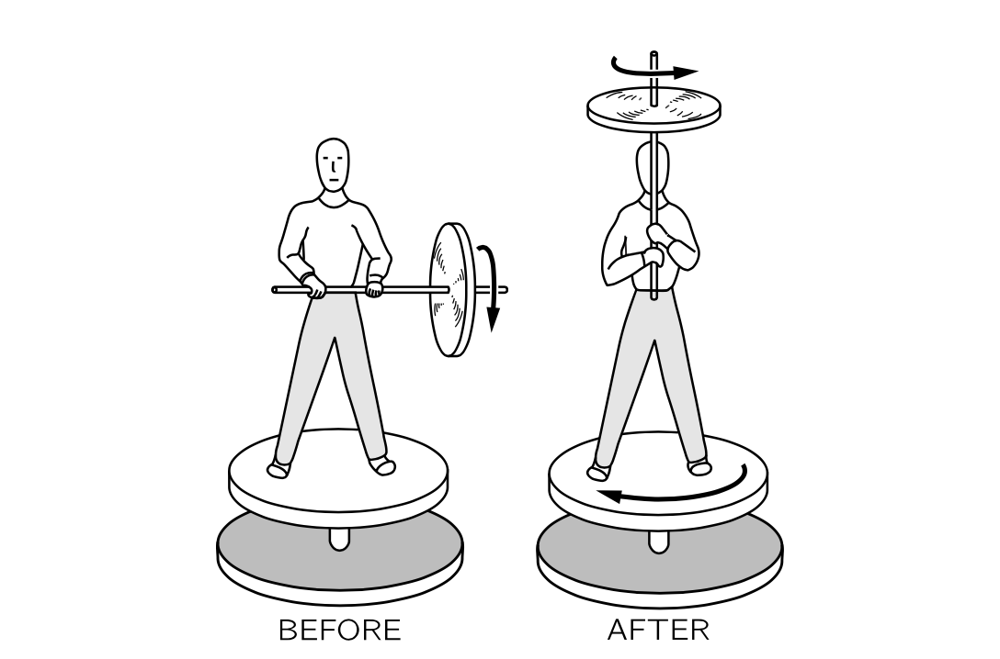
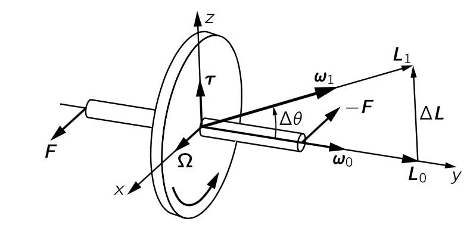

% %
%\[ \DeclarePairedDelimiters{\set}{\{}{\}} \DeclareMathOperator*{\argmax}{argmax} \]
I.18. 2차원 회전
I.18-1 질량중심
강체와 평면 회전
이제 단순한 입자가 아닌 이러한 입자가 결합된, 좀 더 복잡한 물체에 대해 다루기로 하자. 복잡한 물체중에 가장 간단한 물체는 소위 강체이다.
실제로 완전한 강체는 존재하지 않으며, 물리적 추상일 뿐이다. 강체가 할 수 있는 운동 가운데 간단한 운동을 살펴보자. 평면 회전 (plane rotation) 은 고정된 회전축을 중심으로 회전하는 운동이다. 강체가 평면 운동을 할 경우 강체의 각각의 점은 회전축에 수직한 평면 상에서 움직인다. 이런 이유로 평면 회전을 2차원 회전이라고도 한다.
질량중심
우리는 입자의 중력장 하에서의 운동이 포물선임을 알고 있다. 이런 질문을 던져보자: 여러 입자가 결합된, 예를 들면 돌을 던질 때 정확히 포물선을 따라 가는 것은 무엇일까?
\(N(\sim 10^{23})\) 개의 입자로 이루어진 물체의 \(i\) 번째 입자에 가해지는 힘을 \(\boldsymbol{F}_i\) 라고 하면 운동방정식은 다음과 같다.
\[ \boldsymbol{F}_i = m_i \dfrac{d^2\boldsymbol{r}_i}{dt^2}. \]
각각의 입자에 가해지는 힘의 합을 \(\boldsymbol{F}\) 라고 하면
\[ \boldsymbol{F}=\sum_i \boldsymbol{F}_i = \sum_i \dfrac{d^2 \left(m_i\boldsymbol{r}_i\right)}{dt^2} \tag{3.1}\]
이다. 여기서 중요한 것은 물체 내에서 벌어지는 상호작용에 의한 힘은 뉴턴의 제 3 운동법칙에 의해 \(\boldsymbol{F} = \sum_i \boldsymbol{F}_i\) 에서 상쇄된다는 것이다. 따라서 \(\boldsymbol{F}\) 는 내부에서 주고 받는 힘이 아닌 순수한 외부에서 작용하는 힘만 남게된다.
그렇다면 식 3.1 은 다음과 같이 쓸 수 있다.
\[ \boldsymbol{F} = M\dfrac{d^2 \boldsymbol{R}_\text{CM}}{dt^2}. \tag{3.3}\]
이제 우리는 답을 알게 되었다. 돌을 던졌을 때 포물선을 따라가는 것은 돌의 질량중심이다. 그리고 식 3.3 에 대해 다음과 같은 것을 알 수 있다.
- 외력이 없다면 물체의 질량중심은 정지하거나 등속 직선운동을 한다.
- 물체의 질량중심은 물체 내부의 복잡한 상호작용과 분리하여 처리 될 수 있다.
I.18-2 강체의 회전
강체의 회전과 각속도, 각가속도
문제를 단순화하기 위해 강체의 회전을 생각한다. 그리고 강체 안에 고정된 직선이 있어 이 직선을 중심으로 강체가 회전한다고 하자. 이 고정된 직선이 회전축이다. 강체 안의 회전축상에 있지 않은 한 점을 특정하고, 회전 운동 후 이 점이 어디있는지 안다면 물체가 어디에 있는 지 알 수 있다. 회전각은 두 시점에서 물체가 얼마나 회전했는지에 대한 값이다.
직선상의 운동에서 정의된 속도, 가속도와 마찬가지로 각에 대해서 각속도와 각가속도를 정의 할 수 있다.

위의 그림과 같은 2차원 회전을 생각하자. 점 \(P\) 가 \(O\) 를 중심으로 \(\Delta t\) 동안 \(\Delta \theta\) 만큼 회전했다고 하자. \(P\) 의 좌표를 \((x,\,y)\) 라고 하자. 그렇다면
\[ \Delta x = - PQ\sin \theta = - r\Delta \theta \cdot (y/r) = -y \Delta \theta \tag{3.5}\]
이며 같은 방법으로
\[ \Delta y = + x\Delta \theta \tag{3.6}\]
임을 안다. 위의 두 식을 \(\Delta t\) 로 나누어주면
\[ v_x = -\omega y,\qquad v_y = +\omega x \tag{3.7}\]
이며 따라서 아래와 같은 속도와 각속도의 관계를 얻는다.
\[ v=\sqrt{v_x^2+v_y^2} = \omega r. \tag{3.8}\]
토크
속도-각속도, 가속도-각가속도의 관계와 같이 선형 이동과 회전 이동 사이의 유사성이 힘에도 존재한다. 힘 \(\boldsymbol{F}\) 에 의해 작은 회전에 의한 위치 변화 \(\Delta x,\, \Delta y\) 가 생겼다고 하자. 이 때 힘이 한 일 \(\Delta W\) 는
\[ \Delta W = F_x \Delta x + F_y \Delta y \tag{3.9}\]
이다. \(\Delta x,\, \Delta y\) 에 식 3.5, 식 3.6 을 대입하면
\[ \Delta W = (xF_y - yF_x)\Delta \theta \tag{3.10}\]
이다.
역학적 평형

위의 그림과 같이 \(\boldsymbol{r}\) 에 위치한 점 \(P\) 에 힘 \(\boldsymbol{F}\) 가 작용하고 있다고 있으며 이 힘에 의해 \(O\) 를 중심으로 \(\Delta \theta\) 만큼 움직였다고 하자. \(\boldsymbol{F}\) 는 회전에 대한 접선 방향의 \(\boldsymbol{F}_t\) 와 수직방향의 \(\boldsymbol{F}_r\) 로 분해 할 수 있으며 \(\boldsymbol{F}_r\) 은 운동방향에 수직방향이므로 일을 하지 않는다. 즉 힘 \(\boldsymbol{F}\) 에 의한 일은
\[ W = \|\boldsymbol{F}_t \| \, r \Delta \theta \]
이다. 이로부터 토크는 가해지는 힘의 회전에 대한 접선 방향 성분에 회전 반경을 곱한 값이라는 것을 알 수 있다.
I.18-3 각운동량
각운동량
지금까지 강체라는 특수한 경우만을 고려했지만 토크의 특성과 그 수학적 관계는 물체가 강체가 아니더라도 적용할 수 있다. 힘 \(F\) 가 \(F=dp/dt\) 인 것처럼 토크 \(\tau\) 는 각운동량이라고 부르는 양 \(L\) 에 대해 \(\tau = dL/dt\) 임을 보이자.
\[ \begin{aligned} \tau &= xF_y - y F_x = mx \dfrac{d^2y}{dt^2} - my \dfrac{d^2x}{dt^2} \\[0.3em] &= mx \dfrac{d^2y}{dt^2} + m \dfrac{dx}{dt}\dfrac{dy}{dt} - m\dfrac{dx}{dt}\dfrac{dy}{dt} - my \dfrac{d^2x}{dt^2} \\[0.3em] &= \dfrac{d}{dt}\left[m x \dfrac{dy}{dt} - m y\dfrac{dx}{dt}\right]. \end{aligned} \]
즉 토크(\(\tau\)) 는 각운동량(\(L\)) 의 시간에 대한 변화량이다.
\[ \tau = \dfrac{dL}{dt}. \]
행성의 운동의 각운동량
중력에 의한 태양과 행성의 운동을 살펴보자. 중력은 항상 두 행성을 잇는 직선방향을 따라 작용한다. 즉 운동의 접선방향으로 작용하는 힘이 없기 때문에 중력에 의한 토크는 \(0\) 이다.
I.18-4 각운동량 보존
각운동량 보존
많은 입자로 이루어진 계에서 입자끼리의 상호작용에 의한 힘 뿐만 아니라 외부에서 힘이 작용할 수도 있다. 이 경우 어떤 고정축에 대한 \(i\) 번째 입자에 작용하는 토크는 \(i\) 번째 입자의 각운동량의 시간에 대한 미분이며, 전체 토크는 개별 입자의 토크의 합이므로 전체 각운동량은 개별 각운동량의 합이라는 것을 알 수 있다. 즉 \(L=\sum_i L_i\) 라고 하면,
\[ \tau = \sum_i \tau_i = \sum_i \dfrac{dL_i}{dt}= \dfrac{dL}{dt} \tag{3.12}\]
이다. 이제 작용-반작용의 강한 조건, 즉 입자들 사이의 상호작용에 의한 힘은 두 입자를 잇는 직선상에서 작용한다는 조건이 부여된다고 하자. 그렇다면 두 입자 사이의 상호작용에 의한 두 입장의 토크는 상쇄되며 이 경우 내부의 상호작용에 의한 토크의 합은 \(0\) 이다. 즉 작용-반작용의 강한 조건이 성립하는 입자계에서의 토크의 합은 외부의 힘에 의한 토크만 고려해도 된다. 이제 우리는 다음과 같은 수학적 정리를 얻게 된다.
관성 모멘트
\(N\) 개의 입자로 이루어진 강체가 정해진 회전축에 대해 각속도 \(\omega\) 로 회전한다고 하자. \(i\) 번째 입자의 질량, 회전축에서의 거리, 속도가 각각 \(m_i,\,r_i,\,v_i\) 라고 하자. 이때 총 각운동량 \(L\) 은 다음과 같다.
\[ L=\sum_{i} L_i = \sum_i m_i r_i v_i = \left(\sum_i m_i r_i^2\right) \omega \tag{3.13}\]
위와같이 정의된 관성 모멘트 \(I\) 에 대해 각운동량 \(L\) 은 다음과 같다.
\[ L = I\omega. \tag{3.15}\]
I.19. 질량중심과 관성 모멘트
I.19-1 질량중심의 성질
질량중심과 중력중심
다양한 질량의 물체가 합쳐진 복잡한 물체에 작용하는 많은 힘에 대해, 그것이 강체인지 여부와 관계 없이, 모든 외부에서 작용하는 힘의 합과 질량중심 \(\boldsymbol{R}_\text{CM}\) 에 대한 운동방정식을 얻었다(식 3.3). 이 운동방정식이 의미하는 것은 물채 전체를 대표하는 질량중심 \(\boldsymbol{R}_\text{CM}\) 이 존재하여 이 물체에 작용하는 모든 외부의 힘이 마치 물체의 질량이 이 점에 집중되어 있는 것과 같이 이 점의 가속도를 결정한다는 것이다. 그리고 이 질량중심의 성질은 아래와 같이 정리 할 수 있다.
스케일과 자기유사성
점입자에 대해 \(\boldsymbol{F}=m\boldsymbol{a}\) 가 성립하며 복잡한 물체에 대해서는 이와 동일한 구조를 가지는 \(\boldsymbol{F}^{\text{ext}}=M\boldsymbol{a}_\text{CM}\) 이 성립한다. \(\boldsymbol{F}^\text{ext}\) 는 입자계 외부에서 작용하는 힘이며 \(\boldsymbol{a}_\text{CM}\) 은 질량 중심의 가속도이다. 물질의 내부구조와 무관하며 총 질량 \(M\) 에 가해지는 외부 힘만 알면 된다. 즉 \(\boldsymbol{F}=m\boldsymbol{a}\) 는 규모와 무관하게 재현되는 물리법칙이다.
우주의 기본 법칙은 원자 차원(\(10^{-10}\, \text{m}\) 스케일) 에서 작동하며 이며, 이는 파인만 당시 관측 가능하거나 우리가 경험 가능한 크기보다 훨씬 작은 세계이다. 따라서 우리가 발견하게 될 첫 번째 것들은 원자 규모에 비해 특별한 크기가 없는 물체(즉 원자 규모에 비해 훨씬 크고 경험/관측 할 수 있는 물체)에 대해 참이어야 한다.
만약 원자 수준의 작은 입자에 대한 법칙이 더 큰 스케일에서 재현되지 않는다면, 우리는 원자 수준에서 작용하는 법칙들을 쉽게 발견하지 못할 것이다. 그리고 그랬다.
역으로 생각해보자. 작은 세계의 법칙은 큰 세계의 법칙과 동일해야 할까? 원자의 운동 법칙이 어떤 이상한 방정식에 의해 주어진다고 가정해 보자. 그리고 그 방정식은 거시 셰게에서 동일한 법칙을 재현하지 않고, 대신 거시세계에서 특정 식으로 근사할 수 있으며, 그 식을 위로 확장하면 점점 더 큰 규모로 계속 재현된다고 해 보자. 이 방식이 실제로 작동하는 방식이다.
입자들의 실제 미세한 운동 법칙은 매우 특이하지만, 많은 수를 취하여 합치면 뉴턴의 법칙에 근접하게 된다. 그러나 오직 근사적으로 근접한다. 뉴턴의 법칙은 우리에게 점점 더 큰 규모로 진행할 수 있게 하며, 여전히 같은 법칙인 것처럼 보인다. 사실, 규모가 커질수록 점점 더 정확해진다. 따라서 뉴턴 법칙의 이 자기 재생산 요인은 자연의 근본적인 특징이 아니라 중요한 역사적 특징일 뿐이다.
우리는 최초 관측에서 원자의 기본 법칙을 절대 발견하지 못할 것인데 왜냐하면 최초 관측이 너무 조잡하기 때문이다. 사실, 우리가 양자역학이라고 부르는 근본적인 원자 법칙은 뉴턴의 법칙과 상당히 다르며, 우리의 직접적인 경험은 거시적인 물체와 관련된 것이기 때문에 이해하기 어렵고, 미시적인 원자는 우리가 거시 세계에서 보는 것과는 다르게 행동한다. 따라서 우리는 “원자는 태양을 도는 행성과 같다”와 같은 말을 할 수 없다. 거시세계와 미시세계는 완전히 다르다. 양자역학을 점점 더 큰 사물에 적용함에 따라, 많은 원자들의 행동에 관한 법칙들은 스스로 재현되지 않고, 새로운 법칙-뉴튼의 법칙을 만들어낸다. 이러한 법칙들은 수십억 개의 원자에 해당하는 마이크로 미터-마이크로그램 크기에서 지구 크기까지, 그리고 그 이상까지 계속해서 재현된다.
균일한 중력장에서의 평형
물체가 균일한 중력장 \(\boldsymbol{g}=g\hat{z}\) 이 질량 \(M\) 인 강체에 작용한다고 하자. 어떤 단일한 힘 \(\boldsymbol{F}^\text{ext}\) 을 이 물체에 가하여 평형 상태에 있게 하려면 \(\boldsymbol{F}^\text{ext}\) 는 무엇이어야 할까? 우선 병진 운동을 제거하기 위해서는
\[ \boldsymbol{F}^\text{ext} = -M\boldsymbol{g} \]
이어야 한다. 그리고 \[ \boldsymbol{\tau} = \sum_i m_i\boldsymbol{r}_i \times \boldsymbol{g} +\boldsymbol{R}_0 \times \boldsymbol{F}^\text{ext}= -M\boldsymbol{g}\times \left(\boldsymbol{R}_\text{CM} - \boldsymbol{R}_0\right) \]
이며 \(\boldsymbol{\tau}=\boldsymbol{0}\) 이어야 하므로 \(\boldsymbol{R}_0 = \boldsymbol{R}_\text{CM}\) 이어야 한다. 즉 힘이 질량 중심에 작용해야 한다.
질량중심과 관성력
이제 중력 대신 가속도에 의한 관셩력이 작용한다고 하자. 관셩력은 물체 전체에 균일한 힘을 가하기 때문에 질량중심을 떠받치고 있다면 균일한 중력과 마찬가지로 토크가 발생하지 않는다. 이로부터 흥미로운 결론을 내릴 수 있다. 관성기준틀에서 토크는 항상 각운동량의 시간에 대한 변화량이다. 물체가 가속운동을 하는 경우에도 회전축이 질량 중심을 지난다면 토크가 각운동량의 시간에 대한 변화량이라는 것은 변하지 않는다. 즉 (1) 관성기준틀에서의 임의의 축에대한 회전과 (2) 비관성 기준틀에서의 질량중심을 지나는 축에 대한 회전에 대해 \(\boldsymbol{\tau} = d\boldsymbol{L}/dt\) 이다.
I.19-2 질량중심의 계산
파푸스의 무게중심 정리 를 이용한 질량중심 계산.
I.19-3 관성 모먼트의 계산
이를 이용하여 기본적인 도형의 관성 모멘트를 계산하면 아래와 같다.

정리 3.1 (평행축 정리) 질량이 \(M\) 인 물체의 무게중심을 지나는 회전축 대한 관성모먼트가 \(I_\text{CM}\) 일 때 이 축과 \(h\) 만큼 떨어진 평행한 다른 축에 대한 관성모멘트 \(I\) 는 다음과 같다.
\[ I = I_\text{CM} + Mh^2. \tag{3.18}\]
(증명). 일반석을 잃지 않고 회전축이 \(z\) 축과 평행하다고 할 수 있다. 질량중심의 위치를 원점으로 잠고 새로운 축의 위치를 \((a,\,b)\) 라고 하면 \(h=\sqrt{a^2+b^2}\) 이며 \[ \begin{aligned} I &= \sum_i ((x_i-a)^2+(y_i-b)^2)m_i \\[0.3em] &= \underbrace{\sum_i \left(x_i^2+y_i^2\right)m_i}_{=I_\text{CM}} - 2a\underbrace{\sum_i x_im_i}_{=x_\text{cm}=0} -2b\underbrace{\sum_i y_i m_i}_{y_{\text{cm}}=0} + + \sum_i \underbrace{(a^2+b^2)}_{=h^2}m_i \\[0.3em] &= I_\text{CM} + Mh^2 \end{aligned} \]
이다. \(\square\)
I.19-4 회전 운동 에너지
\(\omega\) 의 각속도 회전하는 강체의 운동에너지를 계산해 보자. \(i\) 번째 입자의 회전축으로부터의 거리를 \(r_i\) 라고 하면 회전 속도 \(v_i = r_i \omega_i\) 이므로 그 운동에너지 \(T\) 는 다음과 같다.
\[ T=\dfrac{1}{2}\sum_i m_i v_i^2 = \dfrac{1}{2}\sum_i m_i (r_i \omega)^2 = \dfrac{1}{2}I\omega^2 \tag{3.19}\]
I.20. 공간에서의 회전
I.20-1 3차원 토크
3차원 벡터 외적에 대한 설명들
I.20-2 외적과 회전 방정식
\(\boldsymbol{F}=d\boldsymbol{p}/dt\) 와 같이 토크와 각운동량은 아래의 관계를 갖는다.
\[ \boldsymbol{\tau} = \dfrac{d\boldsymbol{L}}{dt} \tag{3.22}\]
I.20-3 자이로스코프

위의 그림과 같이 회전의자 위에 회전하는 바퀴를 든 사람을 생각하자. 처음엔 회전하는 바퀴를 지면에 수평하게 들고 있었다(Before). 수직축에 대해 각운동량이 0 이다. 바퀴를 수직방향으로 돌리면 바퀴가 수직축에 대해 각운동량을 가지므로 마퀴에 의한 수직방향 각운동량이 0 이 아니다. 그러나 계의 각운동량이 0 이어야 하므로 의자가 바퀴의 방향과 반대방향으로 회전한다. 그런데 회전하는 바퀴를 수평방향에서 수직방향으로 세웠다고 해서 회전의자가 반대방향으로 회전하기 시작하는게 이해가 쉽게 되진 않을 것이다.

\(y\) 축으로 빠르기 회전는 바퀴를 생각하자. 이 경우 각속도와 각운동량 모두 \(y\) 축 방향이다. 이제 바퀴를 \(x\) 축 주위로 아주 느린 각속도 \(\Omega\) 로 회전을 시키려 한다고 하자. 그렇다면 어떤 힘을 주어야 할까? \(x\) 축 방향 회전에 의해 \(y\) 회전축이 \(\Delta \theta\) 만큼 회전했다고 하자. 이 시스템이 가지는 각운동량은 \(y\) 축 중심 회전에서 기인하므로 \(y\) 축이 바뀌면 각운동량도 변한다. 각운동량의 크기는 변하지 않고 각운동량의 방향만 변했으므로 \(\Delta L = L_0 \Delta \theta\) 이며, 이에 해당하는 토크 \(\tau = \Delta L/\Delta t = L_0 \Omega\) 이다. 정확히 벡터로 표현하면
\[ \boldsymbol{\tau} = \boldsymbol{\Omega} \times \boldsymbol{L}_0 \]
이다. 그렇다면 이 토크를 만들기 위해 가해주어야 하는 힘은 위의 그림과 같이 \(x\) 축 방향으로 \(\boldsymbol{F}\) 와 \(-\boldsymbol{F}\) 가 가해져야 한다. 그렇다면 이 힘은 누가 가한 것일까? 그것은 바퀴를 수평으로 든 사람이 수직으로 들기 위해 가한 힘이다. 그런데 뉴턴의 제 3 법칙에 의해 사람이 바퀴를 들기 위해 힘을 가하면, 사람 역시 반대방향의 힘을 받으며, 이로 인해 그림 3.4 의 회전의자가 회전을 하게 된다.
I.21 조화 진동자
I.21-1 선형미분방정식
아래와 같은 형태의 미분방정식을 \(n\)-계 선형미분방정식이라고 한다.
\[ a_n \dfrac{d^n x}{dt^n} + a_{n-1}\dfrac{d^{n-1} x}{dt^{n01}} + \cdots + a_1 \dfrac{dx}{dt} + a_0 x = f(t) \tag{3.23}\]
I.21-2 조화진동자
1차원 단순조화진동자 (Simple harmonic oscilator, 이하 SHO) 는 아래와 같은 2계 선형미분방정식의 해이다.
\[ m\dfrac{d^2x}{dt^2} = -kx. \tag{3.24}\]
또한 우리는 이 미분방정식의 일반해 \(x(t)\) 가 다음과 같다는 것을 안다.
\[ x(t) = A \cos (\omega_0 t + \phi_0),\qquad \text{where }\omega_0 = \sqrt{k/m}. \tag{3.25}\]
여기서 \(A\) 를 진폭 (amplitude) 이라고 하고 \(\phi_0\) 를 위상차 (phase shift) 라고 한다.
I.21-3 조화운동과 원운동
I.21-4 초기조건
식 3.25 에서 우리가 \(t=0\) 일 때의 위치 \(x_0\) 와 속도 \(v_0\) 를 안다고 하자. 그렇다면
\[ A\cos \phi_0 = x_0,\qquad -A \omega_0\sin \phi_0 = v_0 \]
이며 이로부터 \(A,\, \phi_0\) 를 결정 할 수 있다. 이제 이 단순조화진동자의 에너지를 구해보자. 우선 운동에너지 \(T\) 와 포텐셜 에너지 \(U\) 는 다음과 같다.
\[ T=\dfrac{1}{2}mv^2 = \dfrac{m\omega_0^2 \sin^2(\omega_0 t+ \phi_0)}{2},\qquad U = \dfrac{1}{2}kx^2 = \dfrac{m\omega_0^2 \cos^2 (\omega_0 t+\phi_0)}{2} \]
마찰력이 없다면 \(F=-kx\) 는 보존력이므로 역학적 에너지 \(E\) 가 보존되며 다음과 같다는 것을 알 수 있다.
\[ E = T+U = \dfrac{1}{2}m\omega_0^2 A^2 . \]
즉 에너지는 진폭의 제곱에 의존한다. 따라서 진폭을 2배 늘린다면 에너지는 4배가 증가한다. 또한 한 주기동안의 평균운동에너자와 위치에너지는 같으며 전체 역학적 에너지의 반이다.
I.21-5 강제 진동
조화진동자에 외부에서 힘이 가해질 때 강제조화진동자(forced harmonic oscillator) 라고 한다. 외부의 힘이 \(F(t)\) 라면 운동방정식은 아래와 같다.
\[ m\ddot{x} = -kx + F(t). \tag{3.26}\]
가장 간단한 경우는 다음과 같은 경우이다.
\[ F(t) = F_0 \cos \omega t. \tag{3.27}\]
이제 이 힘에 의한 미분방정식 식 3.26 를 풀어보자. 한 특이해는 다음과 같이 주어진다.
\[ x(t) = C\cos \omega t. \tag{3.28}\]
이 식이 식 3.26 를 만족한다면
\[ C= \dfrac{F_0}{m (\omega_0^2 - \omega^2)} \tag{3.29}\]
이다. 더 일반적인 해는 이후에 구해보기로 하고 식 3.29 에 의한 해만 새각해보자. \(\omega \ll \omega_0\) 라면 \(x(t)\) 와 \(F(t)\) 가 거의 같은 방향이며 \(\omega >\omega_0\) 이면 \(x(t)\) 와 \(F(t)\) 가 반대 방향이고 \(\omega \gg \omega_0\) 라면 식 3.28 는 매우 작은 진폭을 갖게 된다. \(\omega \approx \omega_0\) 이면 식 3.28 는 매우 큰 진폭을 갖게 되며 \(\omega=\omega_0\) 이면 무한대의 진폭을 갖게 된다. 물론 이것은 불가능하다.
I.23 공명
I.23-1. 복소수와 조화 운동
식 3.23 형태의 선형미분방정식을 생각하자. \(f(t) = f_0 \cos (\omega t-\phi_0)\) 를 복소함수
\[ f(t) = f_0e^{-i\phi_0}e^{i\omega t} = \hat{f} e^{i\omega t},\quad\text{ where } \hat{f} = f_0e^{-i\phi_0} \]
로 표현하자. 그리고 식 3.23 를 복소선형미분방정식으로 아래와 같이 쓸 수 있다.
\[ a_n \dfrac{d^n x}{dt^n} + a_{n-1}\dfrac{d^{n-1} x}{dt^{n01}} + \cdots + a_1 \dfrac{x}{dt} + a_0 x = f(t) = \hat{f} e^{i\omega t}. \]
위의 미분방정식을 만족하는 복소함수 \(\hat{x}(t)\) 를 구한다면 \(\text{Re}(x(t))\) 는 식 3.23 의 해이다. 그리고 많은 경우 이렇게 미분방정식을 복소함수로 구한 후 실수부 혹은 허수부를 취하는 방법이 편리하다. 이제 이 방법을 강제진동 식 3.26 에 적용하자. 외부의 힘 \(F(t) = F_0 \cos \omega t\) 를 \(\hat{F}(t) = \hat{F} e^{i\omega t}\) 로 표현하면
\[ m \dfrac{d^2 x}{dt^2} + k x = \hat{F} e^{i\omega t} \tag{3.30}\]
이다. 앞서와 같이 특수해 \(x(t) = \hat{x} e^{i\omega t}\) 를 사용한다면
\[ -\omega^2 \hat{x} + \omega_0^2 \hat{x} = \dfrac{\hat{F}}{m},\qquad \text{where } \omega_0 = \sqrt{\dfrac{k}{m}} \tag{3.31}\]
이다. 즉
\[ \hat{x} = \dfrac{\hat{F}}{\omega_0^2-\omega^2} \tag{3.32}\]
이며 이것은 식 3.29 의 결과를 포함한다. 또한 우리는 \(\hat{F}=F_0e^{-i\phi_0}\) 일 때
\[ \hat{x} = \dfrac{F_0e^{-i\phi_0}}{\omega_0^2-\omega^2} \]
임을 안다. 즉 \(\hat{F}\) 와 \(\hat{x}\) 는 같은 위상차를 갖는다.
I.23-2 강제 감쇄 조화진동
실제의 많은 경우 운동을 방해하는 마찰력이 작용한다. 이 마찰을 간단한 식으로 표현하는 것은 대부분 어렵지만 속도에 비례하는 마찰력이 수학적으로 비교적 다루기 쉬우며 실제에도 적용되는 경우가 많다. 이제 속도에 비례하는 마찰력을 식 3.35 에 도입하면 운동방정식은 다음과 같다.
\[ m\dfrac{d^2 x}{dt^2} + c\dfrac{dx}{dt} + k x = F(t). \tag{3.33}\]
이제 \(\gamma = c/m\), \(\omega_0 = \sqrt{k/m}\) 을 도입하면 운동방정식은 다음과 같다.
\[ \dfrac{d^2x}{dt^2} + \gamma \dfrac{dx}{dt} + \omega_0^2 x = \dfrac{F(t)}{m}. \tag{3.34}\]
여기서 \(\beta\) 가 매우 작다고 가정하자. \(\beta\) 값의 다양한 경우에 대해서는 감쇄 조화 진동자 를 참고하라. 외부의 힘 \(F(t) = F\cos (\omega t -\phi_0)\) 이 작용한다고 하자. \(x=\hat{x}e^{i\omega t}\), \(F=\hat{F}e^{i\omega t}\) 로 놓고 풀면 아래의 식을 만족해야 함을 안다.
\[ -\omega^2 \hat{x} + i \gamma \omega \hat{x} + \omega_0^2 \hat{x} = \hat{F}/m \tag{3.35}\]
그렇다면
\[ \begin{aligned} \hat{x} &= \dfrac{\hat{F}}{m\left(\omega_0^2 - \omega^2 +i\gamma \omega\right)} = \dfrac{\hat{F}e^{i\theta}}{m\sqrt{(\omega_0^2 - \omega^2)^2 + \gamma^2\omega^2}},\\[0.3em] &\qquad \qquad \qquad \text{where } \theta = -\tan^{-1}\left(\dfrac{\gamma\omega}{\omega_0^2-\omega^2}\right) \end{aligned} \tag{3.36}\]
위의 식에서 \(|\hat{x}|^2\) 은 아래와 같이 정의되는 \(\rho^2\) 에 비례하는데 물리적으로 중요하다.
\[ \rho^2 = \dfrac{1}{(\omega^2-\omega_0^2)^2 + \gamma^2 \omega^2} \]
\(\rho^2\) 와 \(\theta\) 의 \(\omega\) 의존성은 아래 그림과 같다.

\(\omega \approx \omega_0\) 일 경우 식 3.29 와 같이 무한히 폭주하지 않지만 \(\rho^2\) 값은 유한한 범위에서 매우 커지며 \(\theta \approx \pi/2\) 이다. 그리고 \(\rho^2(\omega)\) 에서의 반치전폭(Full with at half maximum, FWHM) 은 \(\gamma\) 임을 보일 수 있다. 이 폭에 대한 또다른 척도는 \(Q:=\omega_/\gamma\) 이다.위의 식 3.36 에서는 \(Q=6.67\) 이다.
I.23-3 전기적 공명

전자회로의 중요한 세가지 수동소자는 축전기(capacitor), 저항(resistor), 인덕터 (inductor) 이다. 축전기는 금속 판 사이에 부도체를 채운 것으로 전하가 금속판이 각각 \(+Q\), \(-Q\) 의 전하가 대전되면 양쪽 터미널 \(A,\,B\) 에 전위차 \(V\) 가 아래와 같이 발생한다.
\[ V= \dfrac{\sigma d}{\epsilon} = \dfrac{d}{\epsilon A}Q. \tag{3.37}\]
여기서 \(d\) 는 평행판 사이의 거리, \(A\) 는 평행판의 면적, \(\epsilon\) 는 도체 판 사이에 삽입된 부도체의 유전율 (permitivity) 이다.\(^1\) 평형판 대신에 다른 모양일 수도 있지만 전위차가 대전된 전하량 \(Q\) 에 비례하여 \(V=Q/C\) 의 관계가 성립한다. 이 때 \(C\) 를 용량(capacitance) 이라고 한다. 저항은 금속 선과 전기의 흐름으르 방해하는 물질로 이루어져 있으며 저항 양 끝단에 전위차 \(V\) 를 가하면
\[ V=RI = R \dfrac{dq}{dt} \tag{3.38}\]
의 관계가 성립한다. 여기서 \(I:=dq/dt\) 를 전류 (current) 라고 하며 \(R\) 을 전기 저항 혹은 저항 (resistance) 라고 한다. 인덕터는 전류가 흐를 때 자기장을 생성하며 자기장의 크기는 \(dI/dt\) 에 비례한다. 자기장은 전류에 비례하며 유도된 전위차는 전류의 시간에 대한 변화에 비례한다. 즉
\[ V = L \dfrac{dI}{dt} = L \dfrac{dq^2}{dt} \tag{3.39}\]
의 관계가 성립한다. 비례상수 \(L\) 을 자기 유도계수 (self inductance) 라고 한다. 아래와 같은 화로를 구성해 보자.

위의 그림에서 1 번과 2번 터미널 사이에 전압 \(V(t)\) 를 가해주면 아래와 같은 미분방정식을 만족한다.
\[ L \dfrac{d^2q}{dt} + R \dfrac{dq}{dt} + \dfrac{1}{C}q = V(t). \tag{3.40}\]
식 3.39 와 비교해보면 \(L\) 은 질량의 역할을, \(1/C\) 는 용수철 상수의 역할을 \(R\) 은 말 그대로 저항의 역할을 하는 것을 알 수 있다. \(V(t) = \hat{V}e^{i\omega t}\) 의 전위차를 가해준다면 \(\hat{x}\) 를 구했을 때와 같이 \(\hat{q}\) 를 얻는다.
\[ \hat{q} = \dfrac{\hat{V}}{-L\omega^2 + 1/C + iR\omega} = \dfrac{\hat{V}}{L(\omega_0^2-\omega^2 + i\gamma \omega)}. \tag{3.41}\]
여기서 \(\omega_0^2 = 1/LC,\, \gamma = R/L\) 이다.
I.23-4 자연에서의 공명
I.24 진동의 감쇄
I.24-1 진동자의 에너지
강제 감쇄 진동자의 일률
진동자의 운동방정식 식 3.39 은 \(\omega_0 = \sqrt{k/m},\, \gamma = c/m\) 을 도임하여 아래와 같이 쓸 수 있다.
\[ m \dfrac{d^2x}{dt^2} + \gamma m \dfrac{dx}{dt} + m \omega_0^2 x = F(t). \tag{3.42}\]
이번 절에서는 \(F(t)\) 는 \(\cos\) 함수라고 가정한다. 외부에서 작용하는 힘 \(F(t)\) 에 의한 일률(power) \(P\) 는 다음과 같다.
\[ \begin{aligned} P = F\dfrac{dx}{dt} &= m \left[\left(\dfrac{dx}{dt}\right)\left(\dfrac{dx^2}{dt^2}\right) + \omega_0^2 x \left(\dfrac{dx}{dt}\right)\right] + \gamma m \left(\dfrac{dx}{dt}\right)^2 \\[0.3em] &=\dfrac{d}{dt} {\huge[}\underbrace{\dfrac{1}{2}m \left(\dfrac{dx}{dt} \right)^2}_{=T} + \underbrace{\dfrac{1}{2}m\omega_0^2 x^2}_{=U}{\huge ]}+ \gamma m \left(\dfrac{dx}{dt}\right)^2 \\[0.3em] \end{aligned} \]
여기서 \(T\) 는 질량 \(m\) 의 운동에너지, \(U\) 는 단진자의 포텐셜 에너지임을 안다. 이 \(E=T+U\) 를 진동에 저장되는 에너지라고 볼 수 있다. 많은 주기가 지나면 이 저장되는 에너지의 시간에 대한 변화율은 \(0\) 이 되며 결국은 감쇄 효과만 남는다. 한 주기에서의 물리량 \(X\) 의 평균을 \(\langle X\rangle\) 로 표기한다면 \(\langle P\rangle\) 은 다음과 같다.
\[ \langle P \rangle = \left\langle \gamma m \left(\dfrac{dx}{dt}\right)^2\right \rangle. \tag{3.43}\]
\(x(t)=\hat{x}e^{i\omega t}\) 라면 \(\dot{x}(t) = i\omega \hat{x}e^{i\omega t}\) 이며 실제 시스템을 기술하는 것은 \(\text{Re}(x(t))\) 이므로
\[ \langle P \rangle = \dfrac{1}{2}\gamma m \omega^2 x_0^2 \tag{3.44}\]
이다.
저장되는 에너지
저장되는 에너지 \(E=T+U\) 의 주기에 대한 평균 \(\langle E\rangle\) 은
\[ \begin{aligned} \langle E\rangle &= \dfrac{1}{2}m \left\langle \left(\dfrac{dx}{dt}\right)^2\right\rangle + \dfrac{1}{2}m\omega_0^2 \langle x^2\rangle = \dfrac{1}{2}m(\omega_0^2 + \omega^2) \dfrac{1}{2}x_0^2 \end{aligned} \tag{3.45}\]
\(\omega \approx \omega_0\) 이면 \(x_0\) 가 매우 커지기 때문에 저장되는 에너지가 매우 커진다.
\(Q\) 인자
한 주기에서 강제 감쇄 조화진동자에 외부의 힘이 해주는 일과 저장되는 에너지 사이의 비율에 \(2\pi\) 를 곱한 값을 \(Q\) 값, 혹은 \(Q\) 인자라고 한다.
\[ Q := 2\pi \dfrac{\langle P\rangle}{\langle T+U\rangle} = \dfrac{\omega^2 + \omega_0^2}{2\gamma \omega}. \tag{3.46}\]
\(Q\) 값은 이 진동자가 얼마나 효율적인지에 대한 척도이다.
II.24-2 감쇄 진동
파인만의 내용전개와 다르게…
강제감쇄진동 미분방정식의 해
강제감쇄조화진동자의 운동방정식
\[ \ddot{x}+\gamma \dot{x} + \omega_0^2 x = F(t)/m \tag{3.47}\]
강제감쇄진동 미분방정식의 과도해
이 방정식의 해를 구하는 방법은 \(x(t) = e^{\lambda t}\) 로 놓고 위 의 미분방정식에 대입하면,
\[ \lambda^2 + \gamma \lambda + \omega_0^2 = 0 \]
을 얻으며, \(\lambda\) 에 대한 2차방정식의 해는
\[ \lambda = \dfrac{-\gamma \pm \sqrt{\gamma^2-4\omega_0^2}}{2} \]
이다. \(\gamma^2-4\omega_0^2\) 의 부호에 따라 해를 세가지로 분류 할 수 있다.
1. Overdamped : \(\gamma^2 > 4\omega_0^2\) 일 경우
\[ \alpha_1 = \dfrac{-\gamma - \sqrt{\gamma^2-4\omega_0^2}}{2},\quad \alpha_2 = \dfrac{-\gamma + \sqrt{\gamma2-4\omega_0^2}}{2} \]
는 실수이며 과도해는
\[ x(t) = A_1 e^{-\alpha_1 t} + A_2 e^{-\alpha_2 t} \tag{3.48}\]
이다. 이 경우를 overdamped 라고 하며 진동 없이 시간에 따라 감소한다.
2. Underdamped : 반대로 \(\gamma^2<4\omega^2_0\) 일 경우 \(\omega_\gamma = \sqrt{\omega_0^2-\gamma^2/4}\) 에 대해
\[ x(t) = e^{-\gamma t/2 }\text{Re}(A_1 e^{i\omega_\gamma t} + A_2 e^{-i \omega_\gamma t}) = A e^{-\gamma t/2} \cos (\omega_\gamma t + \theta_0) \tag{3.49}\]
를 얻는다. 이런 경우를 underdamped 라고 하며, overdamped 와는 달리 진동이 존재한다.
3. Critically dampled : \(\gamma ^2=4\omega_0^2\) 인 경우를 critically damped 라고 한다. 이 경우에는 \(te^{-\gamma t/2}\) 도 해가 된다. \(x(t) = te^{-\gamma t/2 }\) 에 대해
\[ \ddot{x} + \gamma \dot{x} + \omega_0^2 x = 0 \]
이다. 따라서 이 경우의 해는
\[ x(t) = (A_1+A_2t)e^{-\gamma t/2} \tag{3.50}\]
이다. 세가지 경우 모두 \(A_1,\,A_2\) 는 초기조건 의해 정해진다.
에너지 변화
과도해 \(x_h(t)\) 에 가능한 모든 경우에서
\[ \lim_{t\to +\infty} x_h(t) = \lim_{t \to +\infty} \dfrac{dx_h(t)}{dt} = 0 \]
이다. 즉 충분히 많은 시간이 지나면 과도해는 무시 할 수 있다.